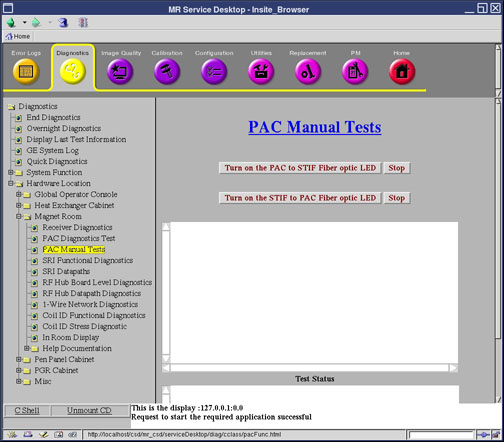
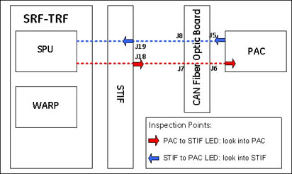

Proprietary to General Electric Company
Direction 5670006, Rev# 1
Discovery MR750w GEM Service Methods
Module Version 3.0, Version Date 8/19/08
Proprietary to General Electric Company |
Diagnostics >> Hardware Location >> Magnet Room >> PAC Manual Tests
Illustration 1: PAC Manual Tests Screen

PAC to STIF LED: This test allows you to visually inspect the PAC serial transmitter and the fiber optic cables that connect to it.
STIF to PAC LED: This test allows you to visually inspect the STIF serial transmitter and the fiber optic cables that connect to it.
PAC to STIF LED: This test causes the SPU (at the TRF board) to command the PAC module to turn on the fiber optic driver LED that is normally used to send serial messages from the PAC module to the STIF board in the MGD chassis.
STIF to PAC LED: This test causes the MGD chassis to turn on the PAC serial port transmitter on the STIF board.
After running this diagnostic, a TPS reset is required prior to scanning.
Illustration 2: Visual Inspection Points and View Directions

Click [Turn on the PAC to STIF Fiber Optic LED].
Disconnect the output fiber cable on the PAC to inspect the LED at the PAC Tx port.
Reconnect the PAC fiber cable to the PAC end and inspect the LED from the other end of the fiber cable, J5 of the CFB.
Click [Stop].
Disconnect the PAC output fiber cable on the STIF.
Click [Turn on the STIF to PAC Fiber Optic LED].
Inspect the LED at the receive line of the fiber optic cable STIF J19 port. The LED at the fiber optic cable should be blinking.
Reconnect the fiber cable to the PAC.
Click [Stop].
The Test Output field will indicate when the LED should be lit and other current status information.
| ||||
| A TPS Reset is required prior to testing. | ||||